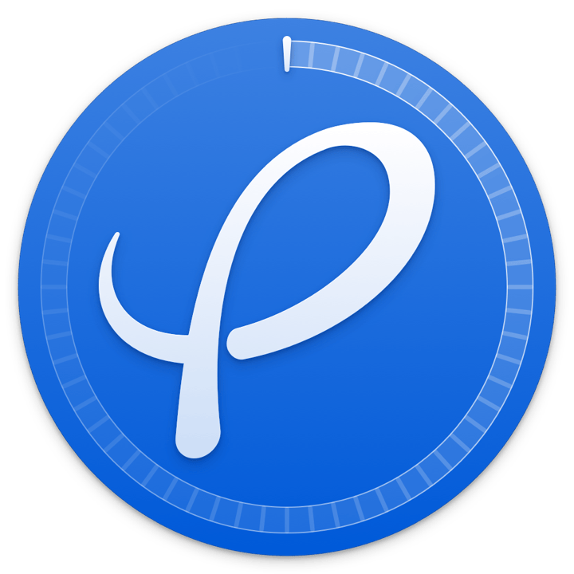
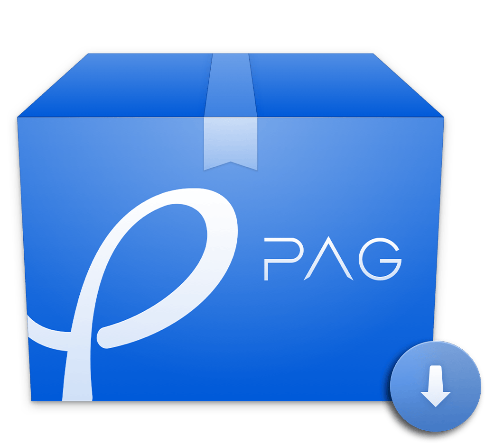

用播放器确认动作，而不是凭文件名猜测。
Auto-loop, play/pause, seek and auto-hide control bar keep focus on animation.
PAG预览当前帧保存为 PNG

PagViewerFOR QUICKLOOKPagViewer 将 PAG 文件带进 Windows 资源管理器的 QuickLook 预览窗口。实时播放、检查图层信息、缩放画布并导出 PNG，不必先打开编辑软件。
适用于 Windows 10/11、QuickLook 4.x 与 WebView2 Runtime
PAG is Tencent's open-source animation format, used in WeChat Red Packet, Honor of Kings, and live streaming gifts. But verifying exported .pag files was always cumbersome:
QuickLook's "select file, press Space to preview" is an efficiency habit I can't live without. Unfortunately, it never had PAG support.
So I made PagViewer — bringing "Space to preview" to PAG files, easily check if animations meet standards, no software needed, no uploading.
Prerequisite: Install QuickLook (Windows QL-Win version), then install this plugin.
Select any .pag file in Explorer, press Space to open preview with playback, inspection and export.
PAG files no longer need special software. PagViewer integrates with QuickLook to quickly verify animations in Explorer.
选中文件QuickLook recognizes .pag files and loads the player.
按下空格Auto-loop animation in an independent preview window.
继续处理素材Export by saving current frame as PNG directly.
Drag progress bar to keyframes, Ctrl+Scroll to zoom, left-click to pan. Switch backgrounds to inspect transparency and edges.
文件信息Hover to view dimensions, duration, FPS and layers.
音量控制Supports button, slider and scroll wheel.
性能监控Real-time FPS overlay, progress bar color reflects render pressure, easily spot frame drops during long previews.
Plugin renders PAG via libpag WebAssembly engine, following QuickLook theme and system language.
Auto-loop, play/pause, seek and auto-hide control bar keep focus on animation.
Switch between default, checkerboard, white, black and custom backgrounds.
View details in preview, double-click to reset view.

Bring PAG playback, inspection and export to QuickLook. Download plugin, press Space to install, then start previewing.
Windows 10/11 · QuickLook 4.x · WebView2 Runtime · GPL-3.0
Get .qlplugin file from GitHub Releases.
Select the file in Explorer, press Space, click "Install" in QuickLook preview.
Restart QuickLook, go to any .pag file, press Space to preview animation.
PagViewer is an open-source .NET plugin. Welcome to modify playback logic, extend export formats or port to other platforms.
git clone .../QuickLook.Plugin.PagViewer.git
cd QuickLook.Plugin.PagViewer
dotnet build -c Releasepowershell -ExecutionPolicy Bypass `
-File Scripts/build.ps1Output is .qlplugin, install back to QuickLook to verify.
Plugin.cs # IViewer Entry
PagViewerPanel.xaml(.cs) # WebView2 Player Panel
Native/ # P/Invoke Stubs
Resources/Web/ # libpag SDK / wasm / Player UI
Samples/ # Sample PAG files for testing
Scripts/ # Build scripts (build.ps1)
*.csproj / *.sln